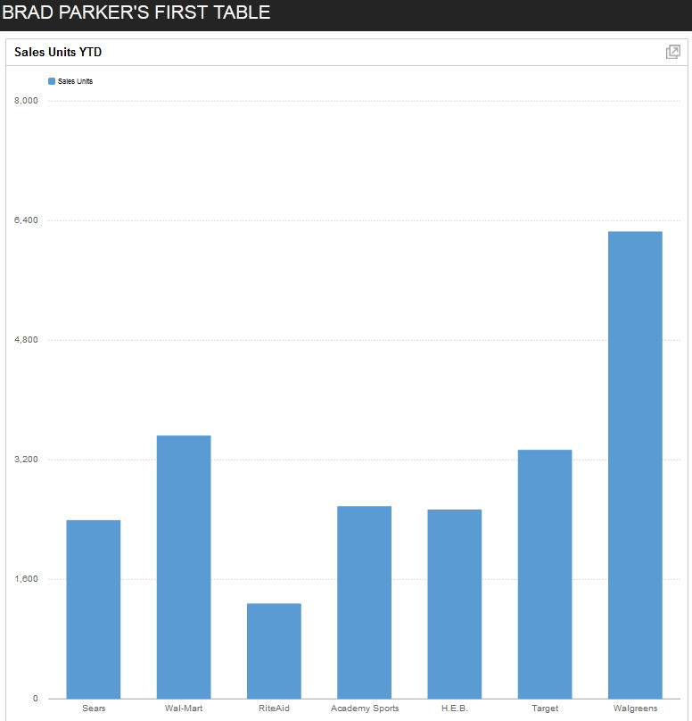

New to adding charts ?
Want to show critical data all at once ?
Have a database anchoring your site ?
I'm here to explain the RAZORFLOW basics and get you up and running, ASAP ! My first chart looked like this.

Visualizing information is important.
Whether you're trying to get a point across to your boss, show clients what's trending on your site, or
furnishing an order history for individual customers accounts, nothing is more impactful
than a chart. Razorflow is an Open Source Dashboard Framework
that focuses on providing the developer with a standard set of charts and dashboards to either
embed into your HTML or link via a stand-alone PHP page.
While Razorflow can display different sources of data (user input through JavaScript,hard-coded elements), the most useful in my opinion is showing dynamic data for key metrics for the purpose needed.There are libraries available for JavaScript, but I will concentrate on the PHP libraries to do the heavy lifting for our database charts.